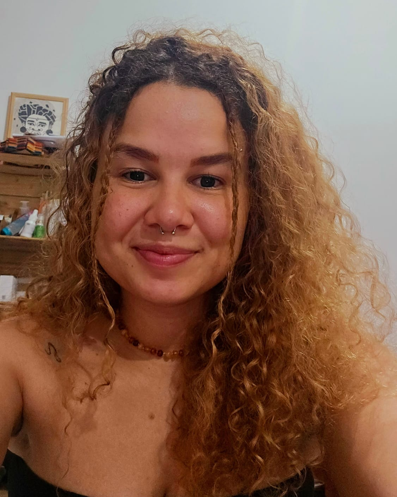

(R E) D I S C O V E R I N G
B R A Z I L
B R A Z I L I A N
G R O U P
To know better our group click on the images

Hello, my name is Kaio André and I am 18 years old. Fourteen years ago, when I was just 5 years old, I was diagnosed with meningococcal meningitis type C. It was a very difficult time, as this serious illness put my life at risk. Fortunately, I managed to survive, but the aftermath of that period left permanent marks.
Since then, I have been living with an intellectual disability that affects my learning and development. It's not an easy journey, but I have the support of my family and specialized professionals who help me overcome daily challenges.
In addition, I am also a survivor of depression. Facing this mental condition was one of the greatest obstacles of my life so far. There were moments when I felt completely lost and hopeless, but with a lot of struggle and determination, I managed to rise again.
Today, I strive to live a fulfilling life, cherishing every small moment and focusing on what truly matters. Despite the difficulties, I am a resilient person.

My name is Giovana but everyone calls me Kira. I am a music therapy student, multi-instrumentalist, social and musical educator, and lover of nature-related adventures. I am also a student of popular culture through the avenues of 'samba de coco' and 'maracatu', and I coordinate the Mentalize M.A. collective.
My journey in culture began at a very young age. My family already had an artistic and musical lineage; I am the daughter of a Waldorf teacher and a natural-born samba musician. Growing up, my personality was shaped around this environment.
At 5 or 6 years old, I was introduced to percussion, but I didn't find myself within this realm. By the age of 7, I was introduced to classical music through classical instruments (violin and cello), where I spent a significant part of my journey. Later, around the age of 16, I returned to the roots that initially introduced me to the world of music through percussion, which I am now deeply exploring, nurturing, and re-creating my roots.
I’m Bárbara, I’m 20 years old and in my free time I enjoy reading, playing guitar and hiking. I graduated from high school in 2022 and right after that I got the opportunity to do an FSJ (year of voluntary social work) in Germany, where I got to work with art and education projects for refugee kids. At the end of last year I returned to Brazil, and I'm currently studying to take the university entrance exam at the end of the year. I plan to study geography, and maybe philosophy too.
I'm Taetê Ori, 24 years old, daughter of teachers and from the favelas of São Paulo, Brazil.
A trained social worker, I graduated in 2023.
I have always worked in the social field as a social educator in the Favela with vulnerable and neurotypical children.
As an artist from the hood, graffiti artist, and musician, I have been playing instruments since I was 7 years old and have navigated between classical music and Samba School.
Percussion is my passion and my refuge.
I do graffiti on the streets of São Paulo with the phrase: "Who’s afraid of a Black woman’s mind?" affirming my strength as a Black woman.
I am currently the coordinator of the Youth Collective, Mentalize MA, which works with socio-cultural events in the Monte Azul Favela.
My name is Emily Evelyn and I am 18 years old. I'm studying English and Business, and I plan to study International Relations in college.
Since I was 15 years old, I have participated in some cultural projects, contributing artistically to collective movements that carry out actions with a positive impact on the world.
I am a drawer and picrures painter. I'm always looking to learn new things. In my free time, I watch documentaries or play sports with my friends.
I'm having the opportunity to leave Brazil for the first time. It will be a great honor to participate in the World Children's Forum.